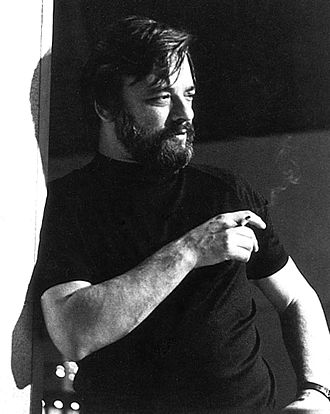

Introduction
In this open educational resource (OER), you will be introduced to the work of Stephen Sondheim. Throughout the OER, you will be introduced to his early life, and we will analyse aspects of two of his musicals, namely: Follies and Into The Woods.
Learning Outcomes
In this module, you will:
1. Learn about Stephen Sondheim's early history.
2. Analyse a song from the musical, Follies.
3. Learn about the plot structure of the musical, Into The Woods.
Stephen Sondheim, among others such as Stephen Schwartz, and Kander and Ebb, is often regarded as a pioneer of the postmodern musical. Extending from other forms of postmodern literature, these musicals either played with, commented on, or outright rejected the classic form dictated by the book musical. One such challenged trope is the idea of the happy ending, which usually resulted in marriage. It is noted that "Sondheim problematizes what we take an ending to be" (Young, 2000). His shows question how we understand the concept of an ending in multiple ways. In one sense, he plays around with non-linear narrative structures, rearranging plot aspects and repositioning our focus. He also questions the need to resolve a narrative with a clean or happy ending. Reflecting real life, sometimes it is impossible to envision a single ending. Sondheim leaves us with ambiguity and the sense that the story is perpetually unfolding, even after the audience leaves the theatre.
Sondheim would continue this form of subversive theatre throughout his career with shows such as Follies (co-written with James Goldman), a structureless revue of washed-up vaudeville performers reliving their glory days, Into The Woods (co-written with James Lapine), a show that subverts the tropes of traditional fairy tales and presents a less sanitised version with morally ambiguous characters. (Sondheim, 2010)